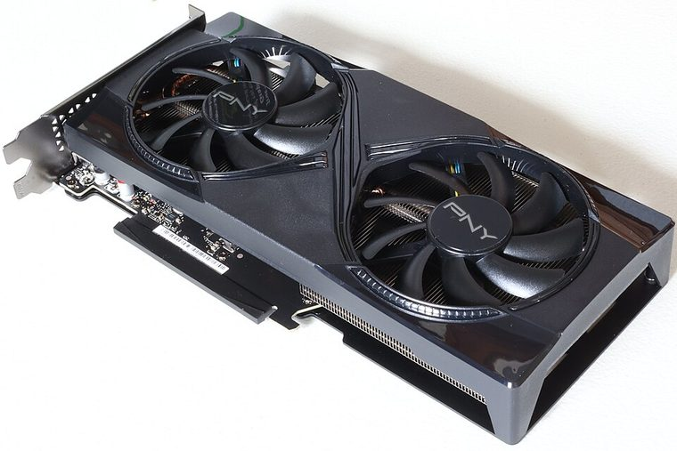

[ NVIDIA // INDIVIDUAL GPU RECORD ]
NVIDIA GeForce RTX 5060 Ti 16 GB reference
2025; Blackwell GB206; 4,608 CUDA cores; 16 GB GDDR7, 128-bit; PCIe 5.0 x8; 180 W; board-specific 8-pin or 16-pin power.

Recorded specifications
| Catalog identity | NVIDIA GeForce RTX 5060 Ti 16 GB reference |
|---|---|
| Model-specific specification | 2025; Blackwell GB206; 4,608 CUDA cores; 16 GB GDDR7, 128-bit; PCIe 5.0 x8; 180 W; board-specific 8-pin or 16-pin power. |
| Vendor-first catalog | NVIDIA vendor directory |
| Model-family index | NVIDIA vendor directory |
Compatibility and maintenance
Not the 8 GB sibling; same die, doubled VRAM. Verify target platform link negotiation and partner dimensions/power plug before purchase.
Sources & further reading
- NVIDIA GeForce RTX 50 seriesManufacturer family reference; confirm the exact board revision and OEM label.